| Cél. galvânica Componente tecnológico | 1125U | | Uma bateria compacta, mas potente. É um componente essencial para a construção de tecnologias que requerem uma fonte de energia interna. |
| Fio de cobre Componente tecnológico | 2100U | | Fio de cobre isolado que pode ser usado em uma ampla variedade de tecnologias e em todos os ambientes. |
| Placa não ferrosa Componente tecnológico | 22500U | | Placa de metal não ferroso leve, maleável, não magnética e altamente resistente a ferrugem e corrosão. |
| 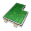 | Circuito Componente tecnológico | 25730U | | Circuito semiflexível empilhável feito de um polímero sintético muito duradouro. |
| Vidro Componente tecnológico | 21840U | | Vidro à prova de rachaduras e resistente a riscos com revestimento autolimpante e proteção contra raios UV para uso geral em construções. |
 | Polifibra Componente tecnológico | 25925U | | Uma fibra conectora para eletrônicos feita com um polímero sintético avançado e capaz de servir de condutora de energia e dados. |
| Ácido Componente tecnológico | 28440U | | Ácido diluído para geração de correntes elevadas em diversas células de energia. |
| Gel isolante Componente tecnológico | 28440U | | Um gel isolante multifuncional para proteger circuitos das intempéries, radiação e degradação química. |
| Lubrificante Componente tecnológico | 28440U | | Um lubrificante sintético que reduz o desgaste e prolonga a vida útil de tecnologias com peças móveis. |
| Explosivo Componente tecnológico | 28440U | | Uma carga explosiva de uso geral com um propelente avançado que pode ser mantido inerte até ser necessário, para transporte e manuseio seguros. |
| Bufa-de-lobo Fungo | 28440U | | Um fungo esférico com lamelas internas encontrado apenas em biomas tóxicos. O bufa-de-lobo pode ser transplantado para cultivo e rende uma colheita não muito frequente, mas generosa.
É adequado para plantação hidropônica em ambientes internos. Certifique-se de que o clima é tóxico antes de cultivá-lo ao ar livre. |
| Erva celeste Planta com flor | 28440U | | Uma flor de cristal grande com pétalas azuis radiantes encontrada apenas em biomas de neve. A erva celeste pode ser cultivada e gera uma colheita certa, embora infrequente.
É adequada para plantação hidropônica em ambientes internos. Certifique-se de que o clima está congelado antes de cultivá-la ao ar livre. |
| Dicotiledônea Planta com flor | 28440U | | Uma planta luminosa com flor e duas folhas que prospera em biomas radioativos e pode ser cultivada, gerando uma colheita frequente.
É adequada para plantação hidropônica em ambientes internos. Certifique-se de que o clima é radioativo antes de cultivá-la ao ar livre. |
 | Cucrassula Suculenta | 28440U | | Nativa de biomas estéreis e capaz de suportar longos períodos de seca, a cucrassula é uma suculenta média comestível que responde bem ao cultivo, rendendo uma colheita média ocasional.
É adequada para plantação hidropônica em ambientes internos. Certifique-se de que o clima é estéril antes de cultivá-la ao ar livre. |
| 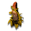 | Vivilava Suculenta | 28440U | | A 'rocha viva' adaptou-se para resistir ao calor extremo de biomas áridos. No entanto, ela pode ser cultivada na maioria dos ambientes e, após se estabelecer, gera uma colheita pequena, mas frequente.
É adequada para plantação hidropônica em ambientes internos. Certifique-se de que o clima é quente antes de cultivá-la ao ar livre. |
 | Raiz-carniça Tubérculo | 28440U | | Um tubérculo não comestível que produz uma quantidade pequena, mas frequente de cristais de mordita. |
| Orbe de coprita Planta com orbe | 28440U | | Um orbe cristalino médio, cultivável e de odor desagradável que reproduz a estrutura química das fezes e gera uma colheita média ocasional de coprita. |
| Orbe de gravitino Planta com orbe | 28440U | | Um orbe cristalino médio cultivável que gera uma colheita ocasional de uma mercadoria altamente comercializável, a esfera de gravitino.
É adequado para plantação ao ar livre. Não pode ser cultivado em ambientes internos. |
| Perdição-do-sangue Planta com flor | 28440U | | Uma planta pequena de aparência inofensiva cujas folhas secretam periodicamente uma pequena quantidade de Veneno ensacado. Um veneno potente e valioso.
É adequada para plantação hidropônica em ambientes internos. Não pode ser cultivada ao ar livre. |
| Orbe perolado de albumina Planta com orbe | 28440U | | Um orbe cristalino médio cultivável que gera uma colheita ocasional de pérolas de albumina valiosas.
É adequado para plantação hidropônica em ambientes internos. Não pode ser cultivado ao ar livre. |
| 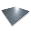 | Folha de carité Componente tecnológico | 600U | | Um produto metálico leve muito usado na manufatura de peças de nave.
Também é utilizado na construção dos postos avançados e instalações planetárias de todas as principais espécies conhecidas. |
| Tecido microdenso Componente tecnológico | 1200U | | Material condutor multifuncional.
É extremamente versátil e usado por toda a galáxia em tecnologias de exotraje, multiferramenta e nave. |
| Fluido de suspensão Componente tecnológico | 800U | | Líquido não reagente e resistente à pressão.
É essencial à manufatura de tecnologias de nave e exotraje. |
| Vapor de elétrons Componente tecnológico | 3600U | | Nuvem capturada de elétrons ionizados.
É um componente fundamental de várias tecnologias e costuma ser usado na criação da antimatéria. |
| Antimatéria Componente tecnológico | 4550U | | Matéria negativa e antipartículas bariogenéticas contidas.
É uma força aproveitada em vários sistemas de nave e exotraje, principalmente na tecnologia do hiperpropulsor. |
| 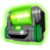 | Ressonador dinâmico Componente tecnológico | 20000U | | Oscilador de frequência eletromagnética.
Um dispositivo necessário à construção de muitas das tecnologias que auxiliam na exploração da galáxia. |
| 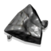 | Arônio Liga de metal neutro | 1125U | | Uma liga metálica leve e altamente maleável.
Por ser útil na construção de postos avançados e instalações planetárias, sua demanda é alta na Rede Comercial Galáctica. |
| Hérox Liga de metal neutro | 2100U | | Liga neutra com utilizações em setores que vão desde a farmacologia até a indústria pesada.
É essencial ao comércio galáctico de ligas metálicas. |
| 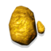 | Lêmio Liga de metal neutro | 22500U | | Liga metálica pesada.
É usada extensivamente na construção de naves cargueiras devido à sua resistência. É um material duro popular na Rede Comercial Galáctica. |
| 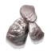 | Crólio Liga de metal neutro | 25730U | | Liga metálica altamente resistente e durável usada na construção da fuselagem de naves e na tecnologia dos drones de exploração espacial.
O mercado de crólio é uma grande força na Rede Comercial Galáctica. |
 | Magmox Liga de metal neutro | 21840U | | Liga metálica lustrosa e muito apreciada. É popular entre os comerciantes de todas as raças galácticas principais conhecidas.
Pode ser reconhecida facilmente por seu brilho vermelho intenso e campo magnético forte. |
| Grantina Liga de metal neutro | 25925U | | Liga metálica macia e maleável que é a favorita dos artesões de toda a galáxia conhecida.
É uma mercadoria popular, e muitas das rotas comerciais galácticas são dedicadas à sua venda e transporte. |
| 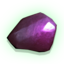 | Terumim Liga de metal neutro | 28440U | | Liga metálica leve comercializada por toda a Borda Externa galáctica.
É comumente usada na parte interna dos transportes comerciais para reduzir seu peso, já que decolam de planetas com campos gravitacionais elevados. |
| Relíquia Gek Item curioso de valor intermediário | 17000U | | Estatueta metálica de uma criatura com uma moeda em seu bico.
É popular entre vários comerciantes que a veem como um símbolo de comércio justo e paz. |
| 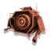 | Efígie Vy'keen Item curioso de valor intermediário | 18000U | | Uma peça de madeira pequena entalhada no formato de um drone sentinela.
Os guerreiros a utilizam para entrar em um transe temporário que elimina a necessidade de sono de sua espécie. |
| GekNip Mercadoria | 15000U | | Produto comestível muito apreciado pelos Geks.
Permite aos comerciantes bicudos liberar pacotes de gás de aroma muito agradável por um período prolongado.
Os pacotes de gás do Geknip são considerados uma forma de arte e a verdadeira representação da alma Gek. |
| 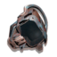 | Invólucro Korvax Item curioso de valor alto | 16000U | | O invólucro metálico de uma forma de vida eletrônica desconectada que estava distante demais de sua espécie para ser substituída por outra entidade.
Muito apreciado por todas as espécies, principalmente os próprios Korvax. |
| Cristais noturnos Componente tecnológico | 17500U | | Aglomerados cristalinos com brilho natural.
São usados na criação de dispositivos tecnológicos e na manufatura de naves. |
| Pedra do Atlas Item curioso de valor muito alto | 50000U | | Joia esférica cujo centro parece pulsar com uma luz vermelha.
É um item extremamente raro e muitas vezes associado a locais de monólitos antigos. |
| Grahgrah Mercadoria | 15000U | | Gás inalado pelos guerreiros Vy'keens para aumentar temporariamente a capacidade dos pulmões e permitir gritos de guerra de alta qualidade.
Foi proibido na galáxia por vários acordos de paz, mas muitos deles não são mais respeitados. |
| 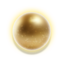 | Conta do fascínio Mercadoria | 9000U | | Esfera de metal dourado usada para aumentar temporariamente o poder de processamento das formas de vida eletrônicas.
Aumenta consideravelmente a condutividade dentro do invólucro da entidade, resultando em análise e pesquisa mais rápidas. |
| Amuleto Gek Mercadoria | 8000U | | Amuleto de sorte carregado por vários comerciantes galácticos. |
| Adaga Vy'keen Mercadoria | 8500U | | Arma amplamente usada em cerimônias. É uma parte essencial da tradição e cultura dos vy'keens. |
| Cubo Korvax Mercadoria | 9500U | | Dispositivo usado pelos Korvax para o armazenamento de informações históricas e culturais. |
| Aquaesfera Mercadoria | 17000U | | Curiosidade extremamente valiosa que pode às vezes ser encontrada nos mares e lagos de alguns sistemas planetários.
Sua origem é desconhecida. |
 | Cubo do vórtice Mercadoria | 18000U | | Objeto de metal denso que há muito tempo se materializou nas redes subterrâneas espalhadas pela galáxia.
É extremamente raro e tem um valor alto. |
| Veneno ensacado Mercadoria | 5000U | | Amostra de veneno estabilizada produzida inicialmente pelo ouriço-do-mar.
É um item raro e caro na Rede Comercial Galáctica. |
| Esfera de gravitino Mercadoria | 6000U | | Aglomerado de partículas superssimétricas.
É um produto extremamente raro e valioso com forças supergravitacionais divergentes. |
| Pérola de albumina Mercadoria | 20000U | | Joia formada ao longo dos séculos no ovo de uma espécie superincubadora.
É extremamente raro. |
| 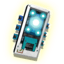 | Módulo de neutrinos Mercadoria | 10000U | | Peça de computador valiosa. Um item comercial muito desejado. |
| Matriz dimensional Mercadoria | 11000U | | Dispositivo muito procurado e comumente visto no mercado galáctico. |
| Célula de dobra Unidade carregadora do hiperpropulsor | 34000U | | Combustível usado para carregar o hiperpropulsor de uma nave e permitir velocidades de dobra superiores à da luz. |
| Plasma instável Recarga do lançador de plasma | 20000U | | Carga armazenada para o lançador de plasma.
É um tipo de energia eletrotérmica para ser usada na tecnologia da granada de disrupção terrestre. |
| Gel energético Célula de recarga de energia | 125U | | Unidade de armazenamento de energia otimizada e conveniente. É usada em várias armas e sistemas de sobrevivência.
É construída facilmente a partir de isótopos comuns e encontrada com frequência em contêineres cilíndricos de metal. |
| 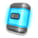 | Lata de energia Célula de recarga de energia | 250U | | Fonte de gel energético com maior capacidade.
Permite o armazenamento eficiente de energia nos inventários do exotraje e da nave.
É usada em várias armas e sistemas de sobrevivência. |
| Reservatório de energia Célula de recarga de energia | 375U | | Fonte de gel energético com alta capacidade.
É um dispositivo muito eficiente que otimiza o armazenamento de energia nos inventários do exotraje e da nave.
É usada em várias armas e sistemas de sobrevivência. |
| Peça de proteção Bateria de energia defensiva | 250U | | Proteção antirrisco e unidade de armazenamento de energia do escudo.
É construída facilmente a partir de óxidos comuns e costuma ser armazenada em caixas amarelas. |
| Placa de proteção Fonte de energia defensiva | 500U | | Unidade de armazenamento de energia com maior capacidade.
Permite o armazenamento eficiente de energia nos inventários do exotraje e da nave.
Usável em sistemas de proteção antirrisco e escudo. |
| Chapa de proteção Fonte de energia defensiva | 750U | | Unidade de armazenamento de energia com alta capacidade.
É um dispositivo muito eficiente que otimiza o armazenamento de energia nos inventários do traje e da nave.
Usável em sistemas de proteção antirrisco e escudo. |
| 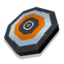 | Chip de bypass Dispositivo de invasão de sistemas | 2600U | | Um dispositivo de uso único para acessar terminais e instalações criptografadas.
É comumente utilizado para invadir as instalações da plataforma de pouso nos postos avançados alienígenas. Talvez seja algo ilegal. |
| 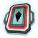 | Passe do Atlas V1 Cartão de acesso | 600U | | Passe de segurança e permissões concedido a determinados viajantes por muitas das espécies galácticas principais.
Oferece acesso a áreas e sistemas de posto avançado restritos de baixo nível. |
| Passe do Atlas V2 Cartão de acesso | 1350U | | Passe de segurança e permissões concedido a determinados viajantes por muitas das espécies galácticas principais.
Oferece acesso a áreas e sistemas de posto avançado restritos de nível intermediário. |
| Passe do Atlas V3 Cartão de acesso | 1900U | | Passe de segurança e permissões concedido a determinados viajantes por muitas das espécies galácticas principais.
Oferece acesso a áreas e sistemas de posto avançado restritos de alto nível. |
| Fundação Módulo de construção | 600U | | A unidade básica de todos os projetos de construção. Fornece uma base sólida para qualquer estrutura. Pode ser colocada sobre qualquer tipo de terreno. |
| Corredor reto Módulo de construção | 600U | | Um módulo de corredor reto padrão para ligar cômodos. |
| 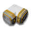 | Corredor em L Módulo de construção | 600U | | Um módulo de corredor sólido em forma de L para ligar cômodos. |
| 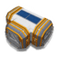 | Corredor em T Módulo de construção | 600U | | Um módulo de corredor em forma de T para ligar vários cômodos. |
| 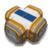 | Corredor em X Módulo de construção | 600U | | Um corredor em forma de X para ligar quatro cômodos. |
| BLD_PRT_FOUNDATION_L BLD_PRT_FOUNDATION_SUBTITLE | 600U | | BLD_PRT_FOUNDATION_DESCRIPTION |
| BLD_PRT_FOUNDATION_L BLD_PRT_FOUNDATION_SUBTITLE | 600U | | BLD_PRT_FOUNDATION_DESCRIPTION |
| BLD_PRT_FOUNDATION_L BLD_PRT_FOUNDATION_SUBTITLE | 600U | | BLD_PRT_FOUNDATION_DESCRIPTION |
| 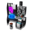 | Terminal científico Terminal de especialista | 600U | | Uma estação de pesquisa feita especialmente para cientistas e equipada para o desenvolvimento de plantas científicas. |
| Terminal de armas Terminal de especialista | 600U | | Uma estação de pesquisa feita especialmente para armeiros e equipada para o desenvolvimento de munições, explosivos e tecnologias civis selecionadas. |
| 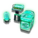 | Terminal agrícola Terminal de especialista | 600U | | Uma estação de pesquisa feita especialmente para fazendeiros e equipada para a análise e o cultivo de colheitas. |
| 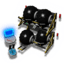 | Terminal de veículos Terminal de especialista | 600U | | Uma estação de pesquisa feita especialmente para mecânicos e equipada com um software de design personalizado de veículos. |
| Terminal de construção Terminal de especialista | 600U | | Uma estação de pesquisa feita especialmente para construtores e equipada com um software de design arquitetônico e de engenharia. |
| 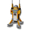 | Sinal Marcador de ponto de referência portátil | 600U | | Quando ativados, os sinais fornecem um ponto de referência permanente, facilitando o retorno a locais específicos. |
| 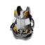 | Scanner de sinal Scanner ambiental | 600U | | Um scanner versátil que pode ser calibrado para verificar tipos de construção específicos definidos por você. |
| Plataforma de pouso Módulo de construção | 600U | | Uma plataforma de pouso estável e reforçada para naves. |
| 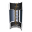 | Escada Item de construção | 600U | | Uma escada leve e resistente com pontos de fixação reforçados para ser presa a paredes. |
| Terminal comercial galáctico Terminal comercial | 600U | | Um terminal comercial que fornece acesso instantâneo ao mercado local para a obtenção de recursos e mercadorias. |
| 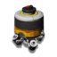 | Unidade de mineração autônoma Dispositivo portátil de mineração | 600U | | Uma coletora automática para a extração de recursos. Quando ativada, ela remove os minerais sem supervisão e fornece-os regularmente até que a fonte se esgote. |
| 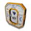 | Porta Item de construção | 600U | | Uma porta padrão fechada por compressão e adequada para qualquer cômodo ou corredor. |
| Esteio de fundação Item de construção | 600U | | Uma perna de sustentação metálica, não ferrosa e reforçada para construções elevadas. |
| 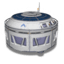 | Cômodo cilíndrico Módulo de construção | 600U | | O módulo principal da construção de bases que fornece um espaço central generoso a partir do qual se pode fazer expansões. |
| Janela Item de construção | 600U | | Uma janela feita de vidro vedado, autolimpante e com proteção contra raios UV. |
| 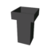 | Módulo de torre Módulo de construção | 600U | | Um módulo de torre alto e empilhável com laterais rígidas, reforçadas e com proteção adicional contra os elementos. |
| Cadeira Mobília | 600U | | Uma cadeira confortável feita para acomodar a maioria das raças bípedes. Faz as nádegas adormecerem um pouco. |
| Cadeira Mobília | 600U | | Uma cadeira confortável feita para acomodar a maioria das raças bípedes. Faz as nádegas adormecerem um pouco. |
| Cadeira Mobília | 600U | | Uma cadeira confortável feita para acomodar a maioria das raças bípedes. Faz as nádegas adormecerem um pouco. |
| Mesa Mobília | 600U | | Uma superfície multifuncional para trabalhar feita com materiais não magnéticos e resistentes a corrosão. |
| Mesa Mobília | 600U | | Uma superfície multifuncional para trabalhar feita com materiais não magnéticos e resistentes a corrosão. |
| 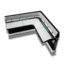 | Mesa Mobília | 600U | | Uma superfície multifuncional para trabalhar feita com materiais não magnéticos e resistentes a corrosão. |
| Cama Mobília | 600U | | Uma cama de solteiro de proporções generosas feita para acomodar da melhor forma possível as extremidades da maioria das raças bípedes. |
| 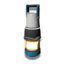 | Luz Instalação | 600U | | Uma luz com baixo consumo de energia, vida útil estendida e componentes totalmente recicláveis. |
| Luz Instalação | 600U | | Uma luz com baixo consumo de energia, vida útil estendida e componentes totalmente recicláveis. |
| Luz Instalação | 600U | | Uma luz com baixo consumo de energia, vida útil estendida e componentes totalmente recicláveis. |
| Luz Instalação | 600U | | Uma luz com baixo consumo de energia, vida útil estendida e componentes totalmente recicláveis. |
| Pavimento Item de construção | 600U | | Pavimento composto durável para a construção de passarelas e áreas pavimentadas. |
| Pavimento Item de construção | 600U | | Pavimento composto durável para a construção de passarelas e áreas pavimentadas. |
| 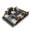 | Estacionamento do quadriciclo Módulo de construção | 600U | | Um estacionamento seguro com tranca e com sensor de proximidade para o quadriciclo híbrido de transporte pessoal. |
| 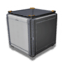 | Cômodo cuboide Módulo de construção | 600U | | Um módulo de construção cuboide pequeno que pode ser empilhado ou conectado para formar estruturas maiores. |
| Esteio de fundação de cômodo cuboide Item de construção | 600U | | Uma perna resistente para sustentar cômodos cuboides. |
| 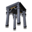 | 4 esteios de fund. de cômodo cuboide Item de construção | 600U | | Um conjunto pré-fabricado de quatro pernas para sustentar cômodos cuboides. |
| Janela Item de construção | 600U | | Uma janela feita de vidro vedado, autolimpante e com proteção contra raios UV. |
| 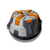 | Ponto de salvamento Módulo de construção | 600U | | Um ponto de salvamento que pode ser construído para gerenciar seu progresso. |
| 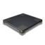 | Piso de cômodo cuboide Item de construção | 600U | | Ladrilhos compostos duráveis cortados para cômodos cuboides. |
| Escada de cômodo cuboide Item de construção | 600U | | Uma escada leve e resistente com partes feitas para cômodos cuboides. |
| Decalque Decoração | 600U | | Decalque decorativo. |
| Decalque Decoração | 600U | | Decalque decorativo. |
 | Decalque Decoração | 600U | | Decalque decorativo. |
| Decalque Decoração | 600U | | Decalque decorativo. |
| Decalque Decoração | 600U | | Decalque decorativo. |
| Decalque Decoração | 600U | | Decalque decorativo. |
| Decalque Decoração | 600U | | Decalque decorativo. |
| Decalque Decoração | 600U | | Decalque decorativo. |
| Decalque Decoração | 600U | | Decalque decorativo. |
| Decalque Decoração | 600U | | Decalque decorativo. |
| Decalque Decoração | 600U | | Decalque decorativo. |
| Decalque Decoração | 600U | | Decalque decorativo. |
| Decalque Decoração | 600U | | Decalque decorativo. |
| Decalque Decoração | 600U | | Decalque decorativo. |
| 4 esteios de fundação Item de construção | 600U | | Um conjunto pré-fabricado de quatro pernas para construções elevadas. |
| 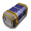 | Corredor com teto de vidro Módulo de construção | 600U | | Corredor com teto de vidro reforçado. |
| 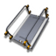 | Rampa de acesso Item de construção | 600U | | Uma rampa reforçada e não ferrosa para fornecer acesso a construções. |
| 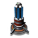 | Ponto de chamada Sinal de chamada de nave | 600U | | Um dispositivo que pode ser construído para chamar sua nave onde quer que ela esteja. |
| 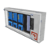 | Painel tecnológico Decoração | 600U | | Um painel tecnológico sem função. É apenas decorativo. |
| 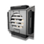 | Ventilador de parede Decoração | 600U | | Um detalhe de ventilação decorativo para paredes. |
| 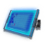 | Tela de parede Decoração | 600U | | Uma tela de vídeo decorativa para ser colocada em paredes. |
| Vaso de planta Decoração | 600U | | Um vaso decorativo para plantas em ambientes internos. |
| 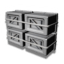 | Unidade de parede Decoração | 600U | | Uma unidade de armazenamento falsa para decorar paredes. |
| 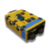 | Contêiner Unidade de armazenamento | 600U | | Espaço adicional generoso para itens do inventário. |
| Estação de comunicação Terminal de comunicação | 600U | | Um terminal no qual se pode criar e transmitir mensagens para outros viajantes. |
| Bandeja hidropônica Tecnologia de cultivo | 600U | | Um sistema de desenvolvimento independente para o cultivo de plantas.
Requisito de construção: deve ser colocado em ambientes internos. |
| Contêiner Unidade de armazenamento | 600U | | Espaço adicional generoso para itens do inventário. |
| 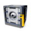 | Contêiner Unidade de armazenamento | 600U | | Espaço adicional generoso para itens do inventário. |
| Contêiner Unidade de armazenamento | 600U | | Espaço adicional generoso para itens do inventário. |
| Contêiner Unidade de armazenamento | 600U | | Espaço adicional generoso para itens do inventário. |
| 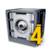 | Contêiner Unidade de armazenamento | 600U | | Espaço adicional generoso para itens do inventário. |
| Contêiner Unidade de armazenamento | 600U | | Espaço adicional generoso para itens do inventário. |
| Contêiner Unidade de armazenamento | 600U | | Espaço adicional generoso para itens do inventário. |
 | Contêiner Unidade de armazenamento | 600U | | Espaço adicional generoso para itens do inventário. |
| Contêiner Unidade de armazenamento | 600U | | Espaço adicional generoso para itens do inventário. |
| Contêiner Unidade de armazenamento | 600U | | Espaço adicional generoso para itens do inventário. |
 | Infraestrutura Decoração | 600U | | Item básico estrutural que pode ser construído. |
| 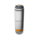 | Infraestrutura Decoração | 600U | | Item básico estrutural que pode ser construído. |
| Infraestrutura Decoração | 600U | | Item básico estrutural que pode ser construído. |
| Infraestrutura Decoração | 600U | | Item básico estrutural que pode ser construído. |
| 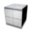 | Infraestrutura Decoração | 600U | | Item básico estrutural que pode ser construído. |
| Infraestrutura Decoração | 600U | | Item básico estrutural que pode ser construído. |
| Janela Item de construção | 600U | | Uma janela feita de vidro vedado, autolimpante e com proteção contra raios UV. |
| 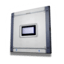 | Janela Item de construção | 600U | | Uma janela feita de vidro vedado, autolimpante e com proteção contra raios UV. |
| Decoração Decoração | 600U | | Ornamento que pode ser construído para embelezar sua base. |
| Decoração Decoração | 600U | | Ornamento que pode ser construído para embelezar sua base. |
| Decoração Decoração | 600U | | Ornamento que pode ser construído para embelezar sua base. |
| Decoração Decoração | 600U | | Ornamento que pode ser construído para embelezar sua base. |
| Decoração Decoração | 600U | | Ornamento que pode ser construído para embelezar sua base. |
| Decoração Decoração | 600U | | Ornamento que pode ser construído para embelezar sua base. |
 | Decoração Decoração | 600U | | Ornamento que pode ser construído para embelezar sua base. |
| Decoração Decoração | 600U | | Ornamento que pode ser construído para embelezar sua base. |
 | Decoração Decoração | 600U | | Ornamento que pode ser construído para embelezar sua base. |
| Decoração Decoração | 600U | | Ornamento que pode ser construído para embelezar sua base. |
| Decoração Decoração | 600U | | Ornamento que pode ser construído para embelezar sua base. |
| Decoração Decoração | 600U | | Ornamento que pode ser construído para embelezar sua base. |
| Decoração Decoração | 600U | | Ornamento que pode ser construído para embelezar sua base. |
| 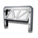 | Decoração Decoração | 600U | | Ornamento que pode ser construído para embelezar sua base. |
| 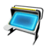 | Decoração Decoração | 600U | | Ornamento que pode ser construído para embelezar sua base. |
| Decoração Decoração | 600U | | Ornamento que pode ser construído para embelezar sua base. |
| Decoração Decoração | 600U | | Ornamento que pode ser construído para embelezar sua base. |
 | Decoração Decoração | 600U | | Ornamento que pode ser construído para embelezar sua base. |
| Decoração Decoração | 600U | | Ornamento que pode ser construído para embelezar sua base. |
| Decoração Decoração | 600U | | Ornamento que pode ser construído para embelezar sua base. |
| Decoração Decoração | 600U | | Ornamento que pode ser construído para embelezar sua base. |
| Decoração Decoração | 600U | | Ornamento que pode ser construído para embelezar sua base. |